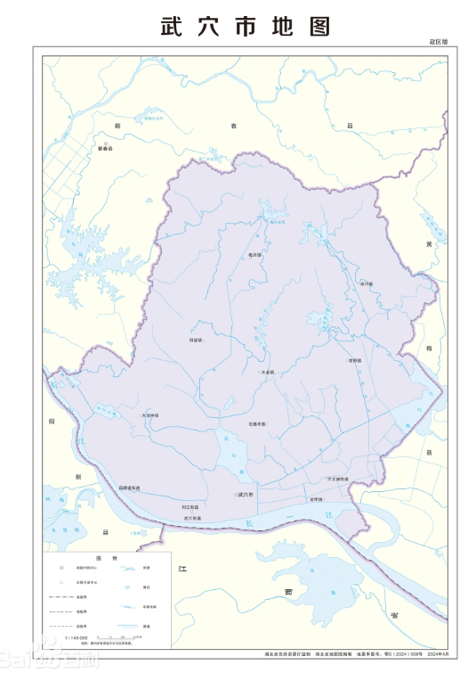

武穴市（Wuxue City）湖北省辖县级市，由黄冈市代管，全市面积1246平方千米。2023年末，武穴市常住人口65.90万人。武穴方言因地理历史原因形成，是一种混合性方言，难以确定归属，但可归为江淮方言次区，亦可称为“广济楚语”。截至2022年10月，武穴市辖4个街道、8个镇。 市人民政府驻武穴街道。
武穴地域经历了多期地壳演变，地貌以平原丘陵为主，地势北部高而东南部低，山地、丘陵、平原分布各具特色。武穴属亚热带季风性湿润气候，温和湿润，四季分明，适宜于农、林、牧、渔全面发展。 夏商周时代，属荆州管辖。1987年10月23日，撤销广济县，设立武穴市。